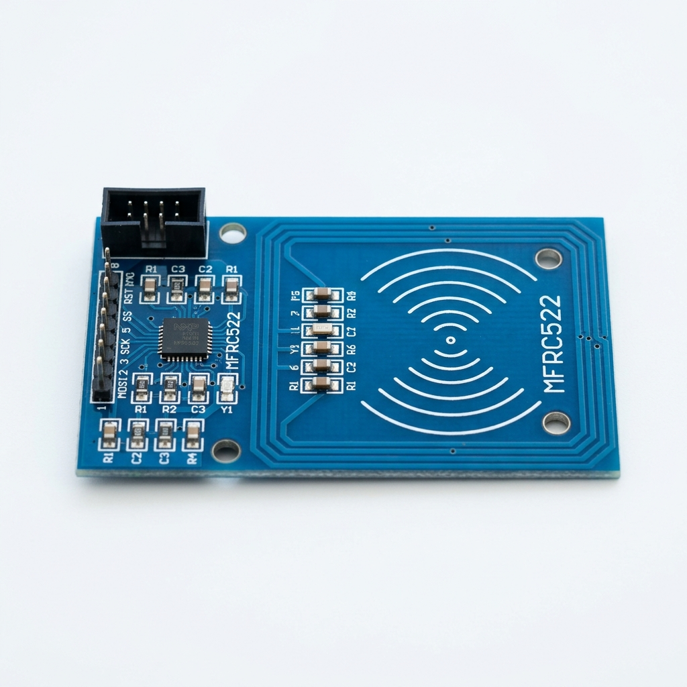
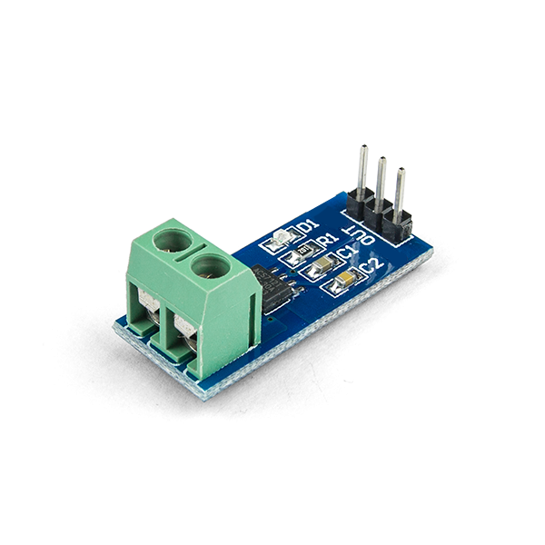
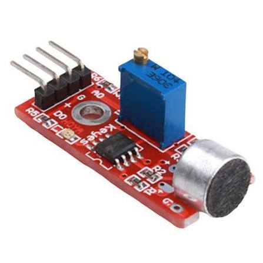

Catálogo de Sensores
Conheça os principais sensores utilizados na Indústria 4.0 para coleta de dados, automação e Internet das Coisas.

DHT11
Sensor básico, de ultrabaixo custo, para medição de temperatura e umidade digital.
Especificações
HC-SR04
Sensor de distância ultrassônico utilizado para detecção de obstáculos e medição de nível.
Especificações
LDR (Fotoresistor)
Resistor cuja resistência diminui quando a intensidade da luz aumenta.
Especificações
PIR HC-SR501
Sensor infravermelho passivo utilizado para detectar a presença e o movimento de corpos quentes.
Especificações
MQ-2
Sensor de gás e fumaça, vital para monitoramento de segurança ambiental na indústria.
Especificações
MFRC522 (RFID)
Leitor de identificação por radiofrequência usado em controle de acesso e logística.
Especificações
ACS712
Sensor de corrente de Efeito Hall utilizado para medição e monitoramento de consumo elétrico.
Especificações
Sensor de Chuva
Detecta presença de água ou chuva, fechando o circuito com o contato das gotas.
Especificações

Sensor Indutivo LJ12A3
Detecta peças metálicas sem contato físico, essencial em esteiras industriais.
Especificações